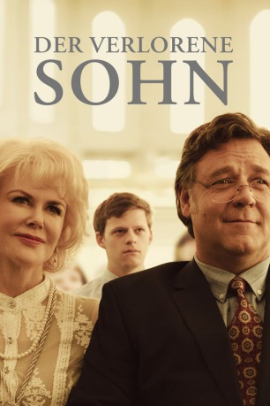
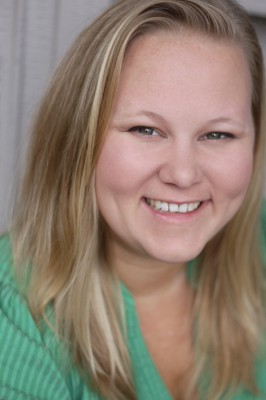
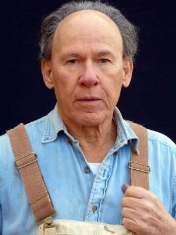
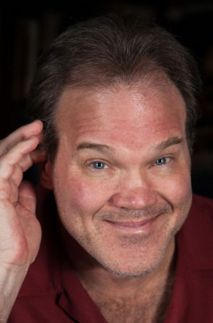
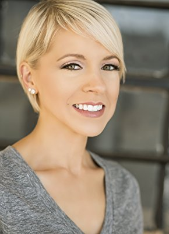

#11188 Der Verlorene Sohn
Alternativ: Boy Erased (Englischer Titel)
 
 IMDB-Wertung: 7.0 / 10
IMDB-Wertung: 7.0 / 10  Metascore: 69
Metascore: 69 
Jared wächst als Sohn eines Baptistenpredigers in einer Kleinstadt in den amerikanischen Südstaaten auf. Als er mit 19 Jahren von einem College-Mitstudenten als schwul geoutet wird, bricht für seinen Vater und seine Mutter Nancy sowie die konservative Gemeinde eine Welt zusammen. Um Jared von seiner Homosexualität zu „heilen“, soll er an einer von der Kirche unterstützten Reparativtherapie teilnehmen, anderenfalls kann Vater Marshall ihn nicht mehr unter seinem Dach leben lassen. Wenn Jared sich nicht beugt, droht dem Teenager aber nicht nur der Verlust der Familie, sondern auch der Verlust seiner eigenen religiösen Identität. Unter diesem Druck nimmt der junge Mann notgedrungen an dem entwürdigenden, unmenschlichen und absurden Umerziehungsprogramm des erbarmungslosen Therapeuten Victor Sykes teil, das auf zwölf Tage angelegt ist…
Jahr: 2018
Dauer: 115 Minuten
FSK: 12
Land: Australien Studio: UPITonspuren: DTS - ,
Untertitel: Deutsch,
Auflösung: 1080p (1920x1040) Größe: 4782 MB
Genre: Drama, Biographie
Regisseur:  Joel Edgerton
Joel Edgerton
Drehbuch: Garrard Conley, Joel Edgerton
Soundtrack: Danny Bensi, Saunder Jurriaans
Darsteller:
 Lucas Hedges als Jared Eamons
Lucas Hedges als Jared Eamons Nicole Kidman als Nancy Eamons
Nicole Kidman als Nancy Eamons Russell Crowe als Marshall Eamons
Russell Crowe als Marshall Eamons- Madelyn Cline als Chloe
 Victor McCay als Aaron
Victor McCay als Aaron- David Joseph Craig als Michael
- Troye Sivan als Gary
- Emily Hinkler als Lee
- Devin Michael als Anders
- Matt Burke als Simon
-  Lindsey Moser als Tina
- Jesse LaTourette als Sarah
- Britton Sear als Cameron
- David Ditmore als Phillip
- William Ngo als Carl
 Joel Edgerton als Victor Sykes
Joel Edgerton als Victor Sykes- Xavier Dolan als Jon
 Tim Ware als Big Jim
Tim Ware als Big Jim Flea als Brandon
Flea als Brandon Randy Havens als Lee's Dad
Randy Havens als Lee's Dad Joe Alwyn als Henry
Joe Alwyn als Henry- Matthew Eldridge als Lead Singer
-  Frank Hoyt Taylor als Pastor Wilkes
 Cherry Jones als Dr. Muldoon
Cherry Jones als Dr. Muldoon- Théodore Pellerin als Xavier
-  Ron Clinton Smith als Cameron's Father
 Jason Davis als Reverend Neil
Jason Davis als Reverend Neil- Cindy Hogan als Cameron's Mother
- Shaye McDonald als Cameron's Younger Sister
- Blake Burgess als Cameron's Older Brother
- Michael King als Cameron's High School Friend
- Lynne Ashe als Cameron's Aunt
- Josh Scherer als Wayne
- Drew Scheid als Nick
- Machai Smith-Bailey als Lance
- Malerie Grady als Mindy
- Paige Henry als Cheryl
- Joy Jacobson als Brandy Vidler
- Will Kindrachuk als Christopher Vidler
- Kevin Linehan als Eric Vidler
- Jesse Malinowski als Young Man in Diner
- Frank Roberts als Old Man in Diner
- Madeline Brumby als Hotel Patron (uncredited)
-  Laura Distin als New Yorker (uncredited)
- Morgan Jon Fox als Camp Allumini (uncredited)
- Sharon Frank als Pianist (uncredited)
- Kyle Jackson als Choir Member (uncredited)
- Perla Middleton als Scandalous Diner Woman (uncredited)
 Mason Pike als HotelPatron / Church Goer (uncredited)
Mason Pike als HotelPatron / Church Goer (uncredited)- Agustin Reiter als Basketball Fan (uncredited)
Datei: X:\2018(N-Z)\Verlorene Sohn, Der (2018, FSK12, 1920x1040).mkv seit 10.05.2019
Festplatte: HD 2018(G-Z)-2019(A-Z)
 Es gibt insgesamt 172 Filme in der Gruppe '2018(N-Z)'
Es gibt insgesamt 172 Filme in der Gruppe '2018(N-Z)'